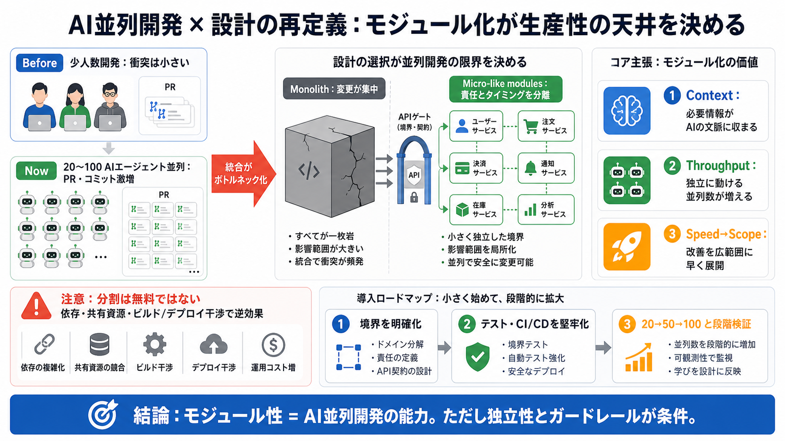

Small software teams now generate as much code as Uber did with microservices — There's no such thing as a small softwa…
> The modularity of your codebase determines how many coding agents you can run in parallel effectively, so now it’s wor…

AIコーディングエージェントを多数同時に走らせる時代、ソフトウェアの分割粒度が 生産性の天井を決め始めます。
従来は小チームゆえに同時変更が少なく、マージ競合や統合作業が相対的に軽かった。 しかし近年は「20〜100のエージェント並列」で、PR・コミットが桁違いに増えます。
モノリス（巨大な塊）は一体感がある一方、並列の衝突ポイントも集中します。 マイクロサービス的なモジュール境界（分割）は、衝突を減らしながら並列を走らせるための「分岐点」です。
AIエージェント時代は「モジュールが十分小さいほど、性能が出る」ことが重要になる。 その結果、モジュールの大きさはコード整理ではなく 運用可能な開発能力そのものになります。
Uberのように多数のマイクロサービスを持つ大規模組織は、サービスごとに変更・デプロイ責任を分離しやすい。 その結果、多数のエンジニアが並行作業でき、極端に見えたモジュール化が将来的に標準になり得る、という見立てです。
100+のエージェント並列では、互いに干渉しない必要があります。 依存が複雑、変更範囲が重なる、ビルドやデプロイが壊れやすいと、衝突対応で時間を奪われて全体がマイナスになり得ます。
「小さく切る」だけでなく、「AIが独立して成果を出せる」粒度へ落とすのが狙いです。 コンテキスト制限と衝突リスク（依存・統合・運用）の両方を見ます。
以前は、分割に伴うCI設定や配管（plumbing）、ボイラープレートが高コストでした。 しかし投稿では「AIが自動生成できれば、その周辺コストが相対的に下がる」と仮説を置いています。
「マイクロサービス一択」ではありません。狙いは、AIエージェントが独立に動ける粒度へ分解することです。
投稿の方向性は説得力がありますが、「失敗率・レビュー工数・テストカバレッジ不足の悪影響」といった定量が不足しています。 また分割は、ガバナンス・依存管理・運用（observability/セキュリティ/変更管理）を複雑にし得ます。
「マイクロサービスに寄せる」だけではなく、API境界の明確化、共有資源の削減、CI/CD堅牢化、テスト戦略整備が必要です。 さらに並列度の上限を段階的に引き上げます（段階検証）。
良いモジュール化は、コンテキスト制限に収まり、独立した作業を増やし、並列で改善を広げる可能性があります。 ただし干渉・運用負債・検証不足があると、逆に生産性を下げます。
> The modularity of your codebase determines how many coding agents you can run in parallel effectively, so now it’s wor…
Deployment Bottlenecks: Deploying a single feature risked breaking unrelated parts of the application. Team Conflicts: …
## Motivations At Uber, we adopted a microservice architecture because we had (circa 2012-2013) primarily two monolithi…
Uber's response was a multi-year migration to a service-oriented architecture, eventually growing to more than 2,200 mic…
RD Cool. Okay. And I know, you know, these microservices, super distributed, there's a lot of things going on at once. H…